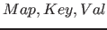
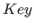
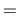
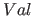
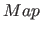
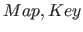
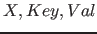
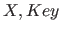
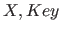

Next: Example Up: Data Types Previous: Data Types Contents
Picat> V1 = X1, V2 = _ab, V3 = _ % variables
Picat> N1 = 12, N2 = 0xf3, N3 = 1.0e8 % numbers
Picat> A1 = x1, A2 = '_AB', A3 = '' % atoms
Picat> L = [a,b,c,d] % a list
Picat> write("hello"++"picat") % strings
[h,e,l,l,o,p,i,c,a,t]
Picat> print("hello"++"picat")
hellopicat
Picat> writef("%s","hello"++"picat") % formatted write
hellopicat
Picat> writef("%-5d %5.2f",2,2.0) % formatted write
2 2.00
Picat> S = $point(1.0,2.0) % a structure
Picat> S = new_struct(point,3) % create a structure
S = point(_3b0,_3b4,_3b8)
Picat> A = {a,b,c,d} % an array
Picat> A = new_array(3) % create an array
A = {_3b0,_3b4,_3b8}
Picat> M = new_map([one=1,two=2]) % create a map
M = (map)[two = 2,one = 1]
Picat> M = new_set([one,two,three]) % create a map set
M = (map)[two,one,three]
Picat> X = 1..2..10 % ranges
X = [1,3,5,7,9]
Picat> X = 1..5
X = [1,2,3,4,5]
Picat allows function calls in arguments. For this reason, it requires structures to be preceded with a dollar symbol in order for them to be treated as data. Without the dollar symbol, the command S=point(1.0,2.0) would call the function point(1.0,2.0) and bind S to its return value. In order to ensure safe interpretation of meta-terms in higher-order calls, Picat forbids the creation of terms that contain structures with the name '.', index notations, array comprehensions, list comprehensions, and loops.
For each type, Picat provides a set of built-in functions and predicates. The index notation  [
[ ], where
], where  references a compound value and
references a compound value and  is an integer expression, is a special function that returns a single component of
is an integer expression, is a special function that returns a single component of  . The index of the first element of a list or a structure is 1. In order to facilitate type checking at compile time, Picat does not overload arithmetic operators for other purposes, and requires an index expression to be an integer.
. The index of the first element of a list or a structure is 1. In order to facilitate type checking at compile time, Picat does not overload arithmetic operators for other purposes, and requires an index expression to be an integer.
A list comprehension, which takes the following form, is a special functional notation for creating lists:
[where:
in
,
,
,
in
,
]
An array comprehension takes the following form:
{ : in , , , in , }
It is the same as:
to_array([
The predicate put() attaches the key-value pair  to the map , where is a non-variable term, and is any term. The function get() returns of the key-value pair attached to . The predicate has_key() returns true iff contains a pair with the given key.
An attributed variable has a map attached to it. The predicate put_attr() attaches the key-value pair to  . The function get_attr() returns of the key-value pair attached to
. The function get_attr() returns of the key-value pair attached to  .
.
Claudio Cesar de Sa 2016-05-29